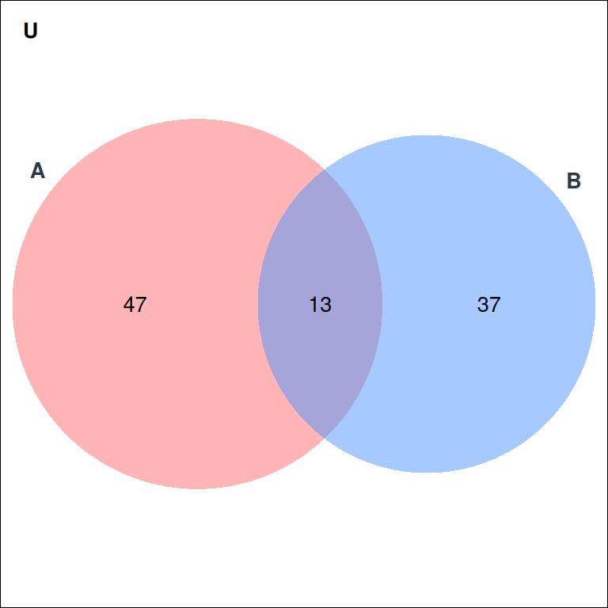
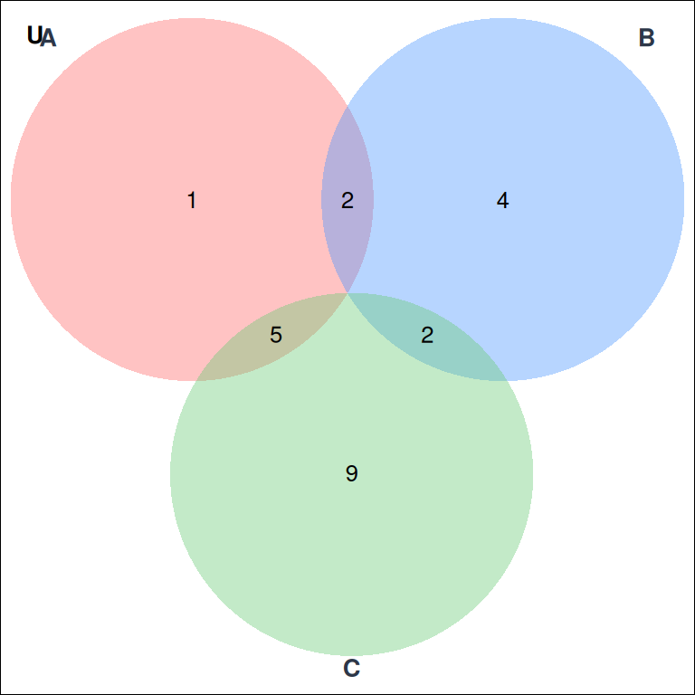
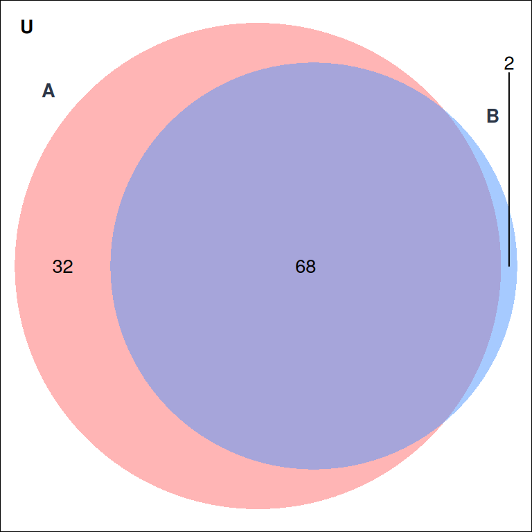
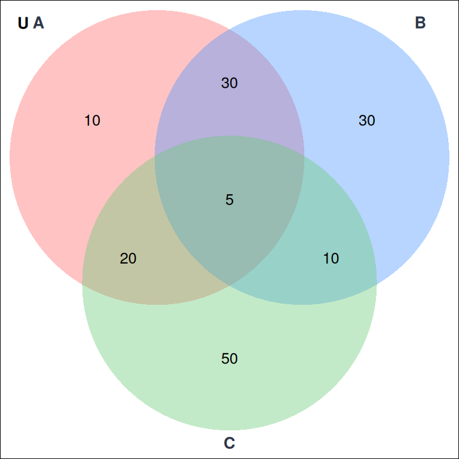
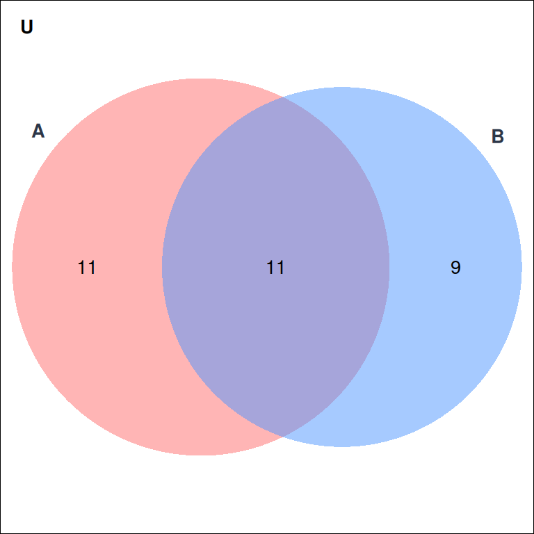
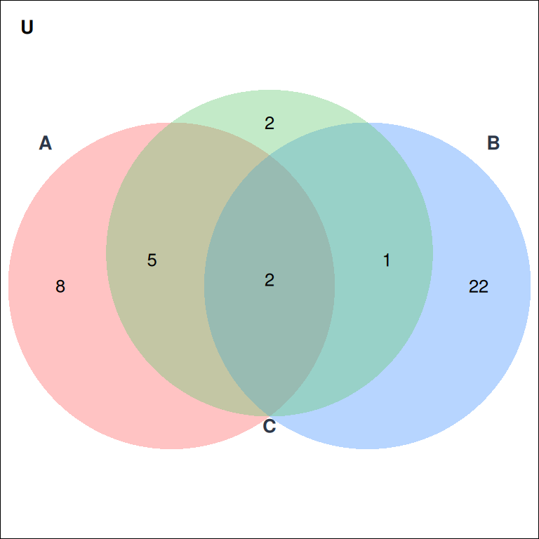
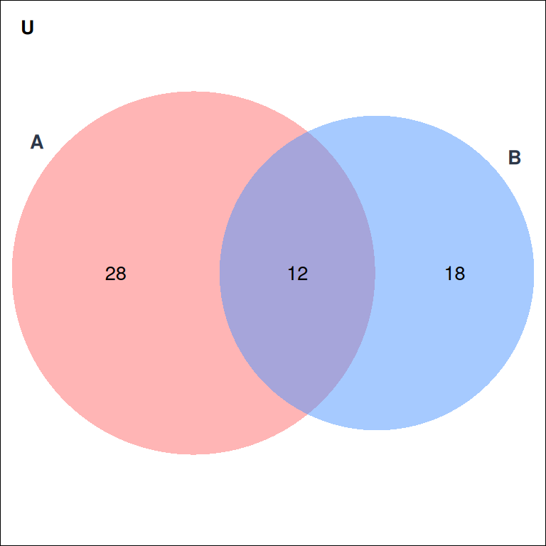
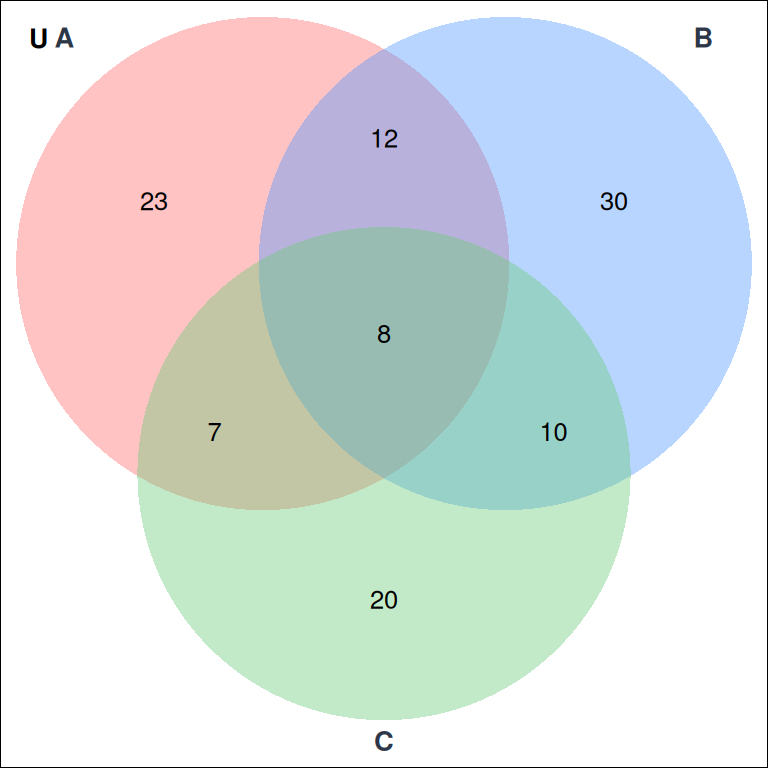

Capítulo 1 Simulacro Evaluación Uno

Figure 1.1: Figura
Usando el diagrama de la Figura 1 (donde los números representan el cardinal de cada región o parte del conjunto). Seleccione sólo las afirmaciones correctas:

Figure 1.2: Figura
Usando el diagrama de la Figura 2 (donde los números representan el cardinal de cada región o parte del conjunto). Seleccione sólo las afirmaciones correctas:

Figure 1.3: Figura
Usando el diagrama de la Figura 3 (donde los números representan el cardinal de cada región o parte del conjunto). Seleccione sólo las afirmaciones correctas:

Figure 1.4: Figura
Usando el diagrama de la Figura 4 (donde los números representan el cardinal de cada región o parte del conjunto). Seleccione sólo las afirmaciones correctas:

Figure 1.5: Figura
Usando el diagrama de la Figura 5 (donde los números representan el cardinal de cada región o parte del conjunto). Seleccione sólo las afirmaciones correctas:

Figure 1.6: Figura
Usando el diagrama de la Figura 6 (donde los números representan el cardinal de cada región o parte del conjunto). Seleccione sólo las afirmaciones correctas:

Figure 1.7: Figura
Usando el diagrama de la Figura 7 (donde los números representan el cardinal de cada región o parte del conjunto). Seleccione sólo las afirmaciones correctas:

Figure 1.8: Figura
Usando el diagrama de la Figura 8 (donde los números representan el cardinal de cada región o parte del conjunto). Seleccione sólo las afirmaciones correctas:

Figure 1.9: Figura
Usando el diagrama de la Figura 9 (donde los números representan el cardinal de cada región o parte del conjunto). Seleccione sólo las afirmaciones correctas:
1.1 Números Reales
Seleccione sólo las afirmaciones verdaderas
Seleccione sólo las afirmaciones verdaderas
Seleccione sólo las afirmaciones verdaderas sobre los resultados de las operaciones
Suponga que \(x = -5\). Seleccione sólo las afirmaciones correctas :
Seleccione sólo las afirmaciones verdaderas sobre los valores absolutos
Suponga que \(x = 4\). Seleccione sólo las afirmaciones correctas :
Seleccione sólo las afirmaciones verdaderas
Seleccione sólo las afirmaciones verdaderas sobre los conjuntos numéricos
Seleccione sólo las afirmaciones verdaderas
Suponga que \(x<0\) y \(y>0\). Seleccione sólo las afirmaciones correctas
1.2 Desigualdades
Suponga la inecuación \[\dfrac{2x+1}{8}<\dfrac{3x-4}{3} .\] Seleccione sólo las afirmaciones correctas para la inecuación :
Suponga la inecuación \[5x-4<12. \] Seleccione sólo las afirmaciones correctas para la inecuación :
Suponga que el conjunto solución de una inecuación es:
\[x \in \ \left(-\infty,-2 \right). \]
Seleccione sólo las afirmaciones correctas:
Suponga la inecuación \[3x-8<5x+5. \] Seleccione sólo las afirmaciones correctas para la inecuación :
Suponga la inecuación \[-1<1-2x<3. \] Seleccione sólo las afirmaciones correctas para la inecuación :
Suponga la inecuación \[-7<2x+1<19. \] Seleccione sólo las afirmaciones correctas para la inecuación :
Suponga la inecuación \[8x+4<16+5x. \] Seleccione sólo las afirmaciones correctas para la inecuación :